Chile¶
Webinars¶
Below you can find videos with a general description of the localization, and how to configure it.
Introduction¶
The Chilean localization has been improved and extended in Odoo v13. In this version, the next modules are available:
l10n_cl: Adds accounting features for the Chilean localization, which represent the minimal configuration required for a company to operate in Chile and under the SII (Servicio de Impuestos Internos) regulations and guidelines.
l10n_cl_edi: Includes all technical and functional requirements to generate and receive Electronic Invoice via web service, based on the SII regulations.
l10n_cl_reports: Adds the reports Propuesta F29 y Balance Tributario (8 columnas).
Configuration¶
Install the Chilean localization modules¶
For this, go to Apps and search for Chile. Then click Install in the module Chile E-invoicing. This module has a dependency with Chile - Accounting. In case this last one is not installed, Odoo installs it automatically with E-invoicing.
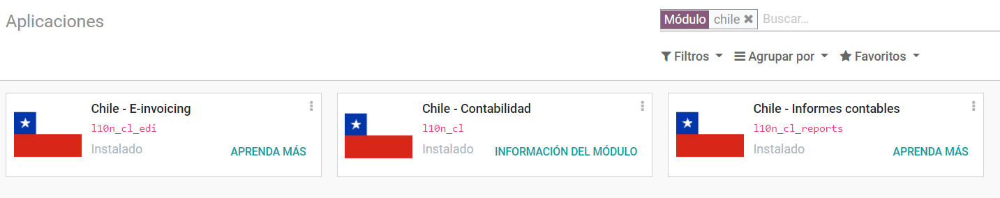注釈
When you install a database from scratch selecting Chile as country, Odoo will automatically install the base module: Chile - Accounting.
Company Settings¶
Once the modules are installed, the first step is to set up your company data. Additional to the basic information, you need to add all the data and elements required for Electronic Invoice, the easiest way to configure it is in .
重要
All the following configuration and functionality is only available in Odoo if your company already passed the Certification process in the SII - Sistema de Facturación de Mercado, this certification enables you to generate electronic invoices from your ERP and send them automatically to the SII. If your company has not passed this certification yet, make sure you communicate this to your Account Manager as a special process outside Odoo is required in order to complete this certification.
Fiscal Information¶
Fill in the fiscal information for your company according to the SII register, follow the instructions on each section.
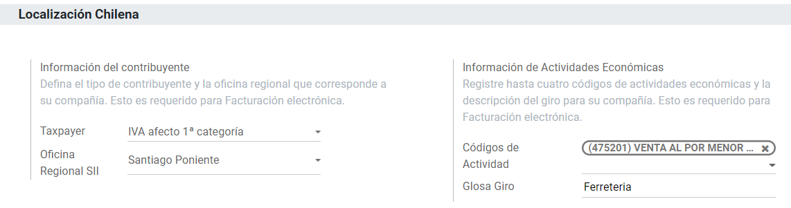Electronic Invoice Data¶
This is part of the main information required to generate electronic Invoice, select your environment and the legal information, as well as the email address to receive invoices from your vendors and the alias you use to send invoices to your customers.
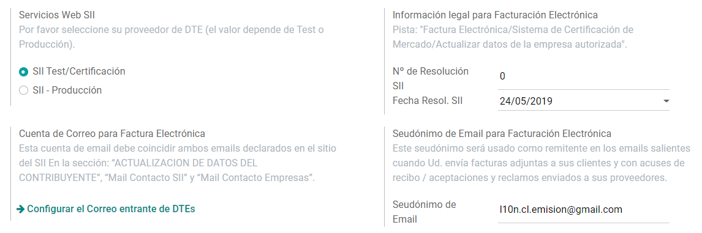Configure DTE Incoming email server¶
In order to receive you the claim and acceptance emails from your customers, it is crucial to define the DTE incoming email server, considering this configuration:
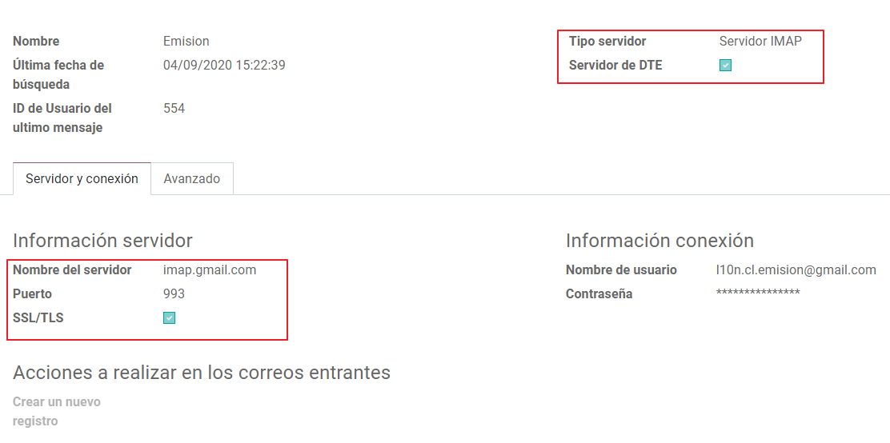ちなみに
For your Go-live make sure you archive/remove from your inbox all the emails related to vendor bills that are not required to be processed in Odoo.
Certificate¶
In order to generate the electronic invoice signature, a digital certificate with the extension .pfx
is required, proceed to this section and load your file and password.
A certificate can be shared between several users. If this is the case leave the user field empty, so all your billing users can use the same one. On the other hand, if you need to restrict the certificate for a particular user, just define the users in the certificate.
注釈
In some cases, depending on the certificate format, it is possible that the field Subject Serial Number is not loaded automatically. If this is the case, you can manually edit this field by filling it with the Certificate’s legal representative RUT.
Financial Reports¶
The report Propuesta F29 requires two values that need to be defined as part of the company configuration:
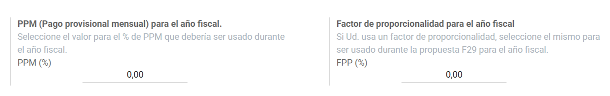Multicurrency¶
The official currency rate in Chile is provided by the Chilean service mindicador.cl. You can find this service in the currency rate configuration, and you can set a predefined interval for the rate updates.
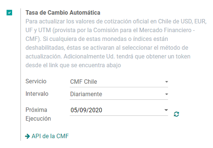Chart of accounts¶
The chart of accounts is installed by default as part of the set of data included in the localization module. The accounts are mapped automatically in:
Taxes.
Default Account Payable.
Default Account Receivable.
Transfer Accounts.
Conversion Rate.
Master Data¶
Partner¶
Identification Type and VAT¶
As part of the Chilean localization, the identification types defined by the SII are now available on the Partner form. This information is essential for most transactions.
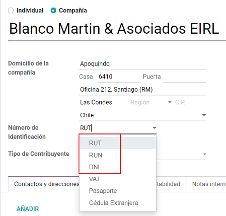TaxpayerType¶
In Chile, the document type associated with customers and vendors transactions is defined based on the Taxpayer Type. This field should be defined in the partner form, when creating a customer is important you make sure this value is set:
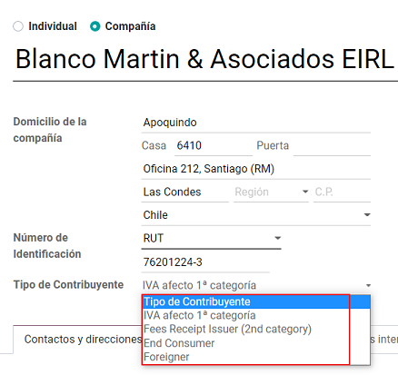Electronic Invoice Data¶
As part of the information that is sent in the electronic Invoice, you need to define the email that is going to appear as the sender of the electronic invoice to your customer, and the Industry description.
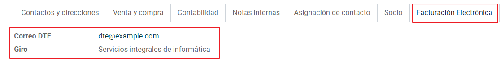Taxes¶
As part of the localization module, the taxes are created automatically with their related financial account and configuration.
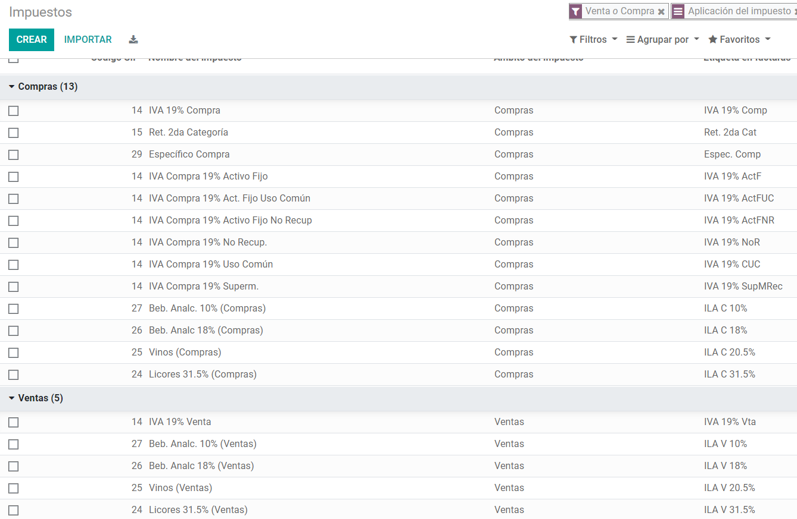Taxes Types¶
Chile has several tax types, the most common ones are:
VAT. Is the regular VAT and it can have several rates.
ILA (Impuesto a la Ley de Alcholes). Taxes for alcoholic drinks. It has a different rate.
Fiscal Positions¶
Based on the purchase transactions, the VAT can have different affections. This will be done in Odoo using the default purchase fiscal positions.
Document Types¶
In some Latin American countries, including Chile, some accounting transactions like invoices and vendor bills are classified by document types defined by the government fiscal authorities (In Chile case: SII).
The document type is essential information that needs to be displayed in the printed reports and that needs to be easily identified within the set of invoices as well of account moves.
Each document type can have a unique sequence per company. As part of the localization, the Document Type includes the country on which the document is applicable and the data is created automatically when the localization module is installed.
The information required for the document types is included by default so the user doesn't need to fill anything on this view:
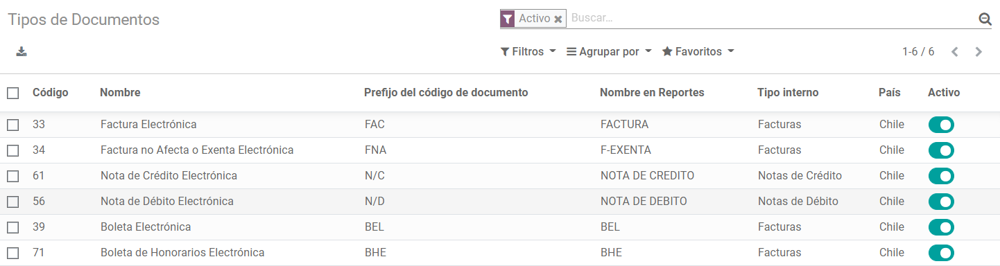注釈
There are several document types that are inactive by default but can be activated if needed.
Use on Invoices¶
The document type on each transaction will be determined by:
The Journal related to the Invoice, identifying if the journal uses documents.
Condition applied based on the type of Issues and Receiver (ex. Type of fiscal regimen of the buyer and type of fiscal regimen of the vendor).
Journals¶
Usage¶
Sales¶
Sales Journals in Odoo usually represent a business unit or location, example:
Ventas Santiago.
Ventas Valparaiso.
For the retail stores is common to have one journal per POS:
Cashier 1.
Cashier 2.
Purchases¶
The transactions purchase can be managed with a single journal, but sometimes companies use more than one in order to handle some accounting transactions that are not related to vendor bills but can be easily registered using this model, for example:
Tax Payments to government.
Employees payments.
Configuration¶
When creating sales journals the next information must be filled in:
Point of sale type: If the Sales journal will be used for electronic documents, the option Online must be selected. Otherwise, if the journal is used for invoices imported from a previous system or if you are using the SII portal “Facturación MiPyme“ you can use the option Manual.
Use Documents: This field is used to define if the journal will use Document Types. It is only applicable to Purchase and Sales journals that can be related to the different sets of document types available in Chile. By default, all the sales journals created will use documents.
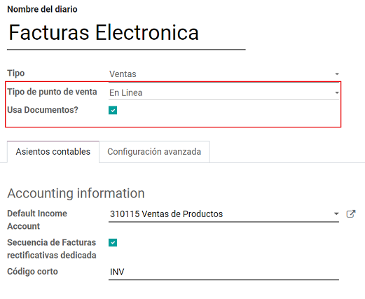重要
For the Chilean localization, it is important to define the default Debit and Credit accounts as they are required for one of the debit notes use cases.
CAF¶
A CAF (Folio Authorization Code) is required, for each document type that is issued to your customers, the CAF is a file the SII provides to the Emisor with the folio/sequence authorized for the electronic invoice documents.
Your company can make several requests for folios and obtain several CAFs, each one associated with different ranges of folios. The CAFs are shared within all the journals, this means that you only need one active CAF per document type and it will be applied on all journals.
Please refer to the SII documentation to check the detail on how to acquire the CAF: SII Timbraje.
重要
The CAFs required by the SII are different from Production to Test (Certification mode). Make sure you have the correct CAF set depending on your environment.
Configuration¶
Once you have the CAF files you need to associate them with a document type in Odoo, in order to add a CAF, just follow these steps:
Access to
Upload the file.
Save the CAF.
Once loaded, the status changes to In Use. At this moment, when a transaction is used for this document type, the invoice number takes the first folio in the sequence.
重要
In case you have used some folios in your previous system, make sure you set the next valid folio when the first transaction is created.
Usage and Testing¶
Electronic Invoice Workflow¶
In the Chilean localization the electronic Invoice workflow covers the Emission of Customer Invoices and the reception of Vendor Bills, in the next diagram we explain how the information transmitted to the SII and between the customers and Vendors.
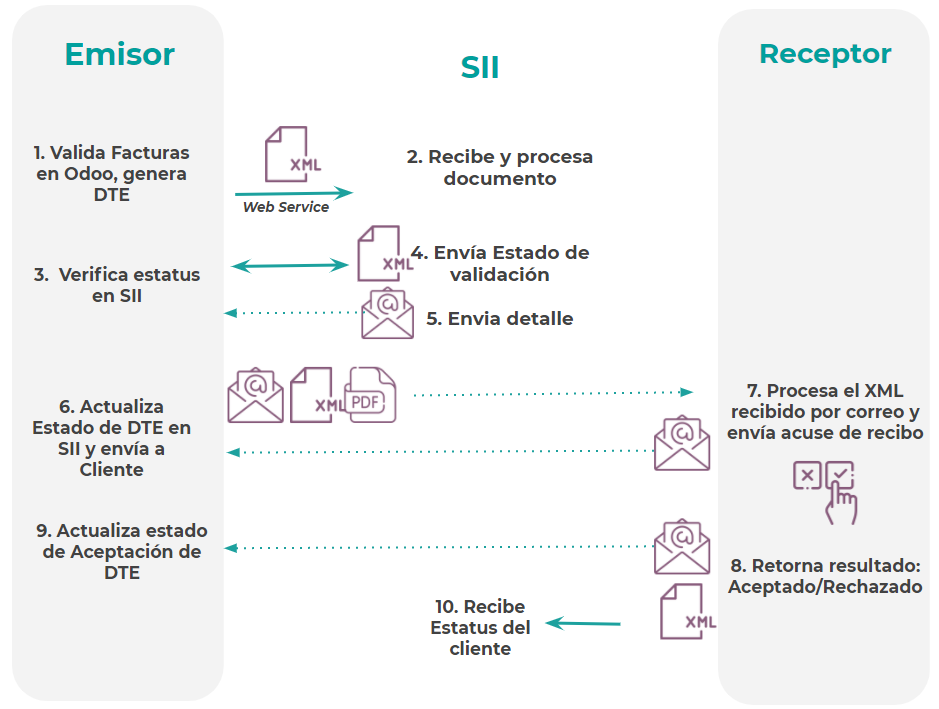Customer invoice Emission¶
After the partners and journals are created and configured, the invoices are created in the standard way, for Chile one of the differentiators is the document type which is selected automatically based on the Taxpayer.
You can manually change the document type if needed.
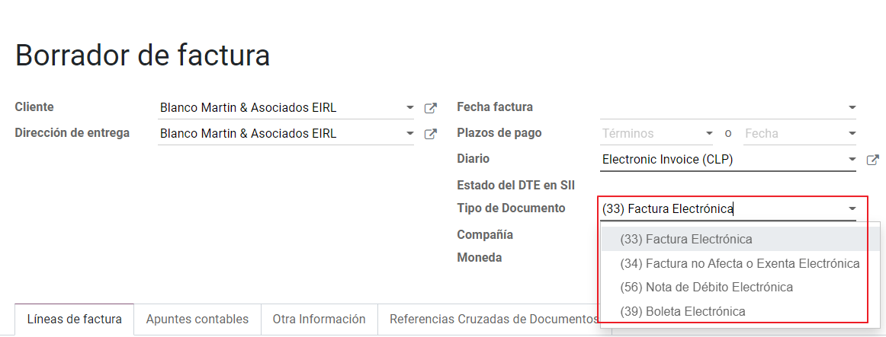重要
Documents type 33: Electronic Invoice must have at least one item with tax, otherwise the SII rejects the document validation.
Validation and DTE Status¶
When all the invoice information is filled, either manually or automatically when it’s created from a sales order, proceed to validate the invoice. After the invoice is posted:
The DTE File (Electronic Tax Document) is created automatically and added in the chatter.
The DTE SII status is set as: Pending to be sent.
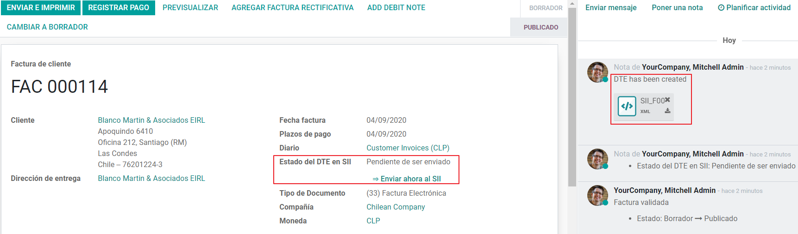
The DTE Status is updated automatically by Odoo with a scheduled action that runs every day at night, if you need to get the response from the SII immediately you can do it manually as well. The DTE status workflow is as follows:
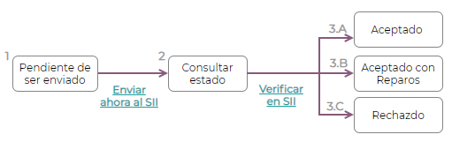In the first step the DTE is sent to the SII, you can manually send it using the button: Enviar Ahora, a SII Tack number is generated and assigned to the invoice, you can use this number to check the details the SII sent back by email. The DTE status is updated to Ask for Status.
Once the SII response is received Odoo updates the DTE Status, in case you want to do it manually just click on the button: Verify on SII. The result can either be Accepted, Accepted With Objection or Rejected.
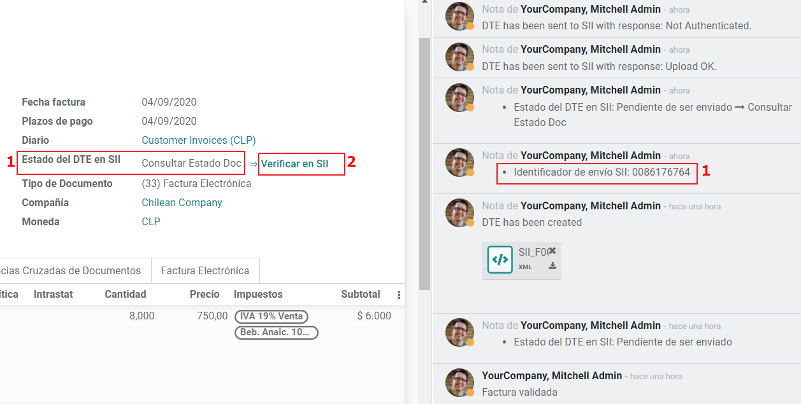There are several internal status in the SII before you get Acceptance or Rejection, in case you click continuously the Button Verify in SII, you will receive in the chatter the detail of those intermediate statuses:
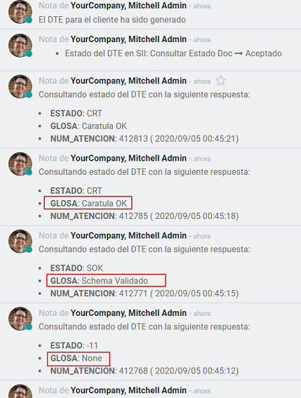The final response from the SII, can take on of these values:
Accepted: Indicates the invoice information is correct, our document is now fiscally valid and it’s automatically sent to the customer.
Accepted with objections: Indicates the invoice information is correct but a minor issue was identified, nevertheless our document is now fiscally valid and it’s automatically sent to the customer.
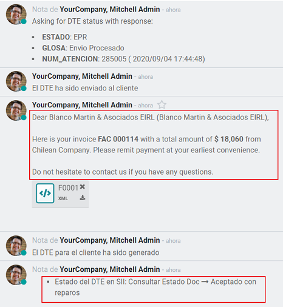Rejected: Indicates the information in the invoice is incorrect and needs to be corrected, the detail of the issue is received in the emails you registered in the SII, if it is properly configured in Odoo, the details are also retrieved in the chatter once the email server is processed.
If the invoice is Rejected please follow this steps:
Change the document to draft.
Make the required corrections based on the message received from the SII.
Post the invoice again.
Crossed references¶
When the Invoice is created as a result of another fiscal document, the information related to the originator document must be registered in the Tab Cross Reference, which is commonly used for credit or debit notes, but in some cases can be used on Customer Invoices as well. In the case of the credit and debit notes, they are set automatically by Odoo:
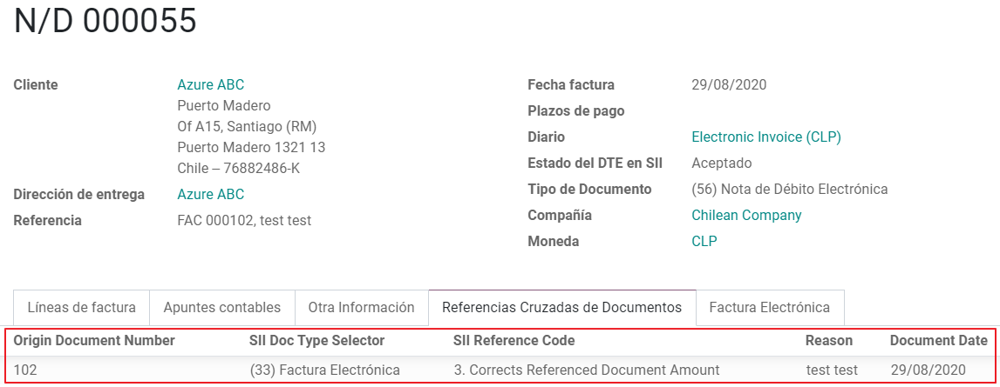Invoice PDF Report¶
Once the invoice is accepted and validated by the SII and the PDF is printed, it includes the fiscal elements that indicate that the document is fiscally valid:
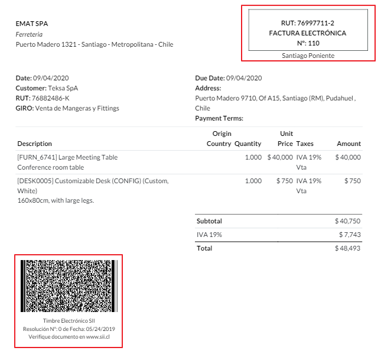重要
If you are hosted in Odoo SH or On-Premise, you should manually install the pdf417gen
library. Use the following command to install it: pip install pdf417gen.
Commercial Validation¶
Once the invoice has been sent to the customer:
DTE partner status changes to “Sent”.
The customer must send a reception confirmation email.
Subsequently, if all the commercial terms and invoice data are correct, they will send the Acceptance confirmation, otherwise they send a Claim.
The field DTE acceptation status is updated automatically.
Processed for Claimed invoices¶
Once the invoice has been Accepted by the SII it can not be cancelled in Odoo. In case you get a Claim for your customer the correct way to proceed is with a Credit Note to either cancel the Invoice or correct it. Please refer to the Credit Notes section for more details.
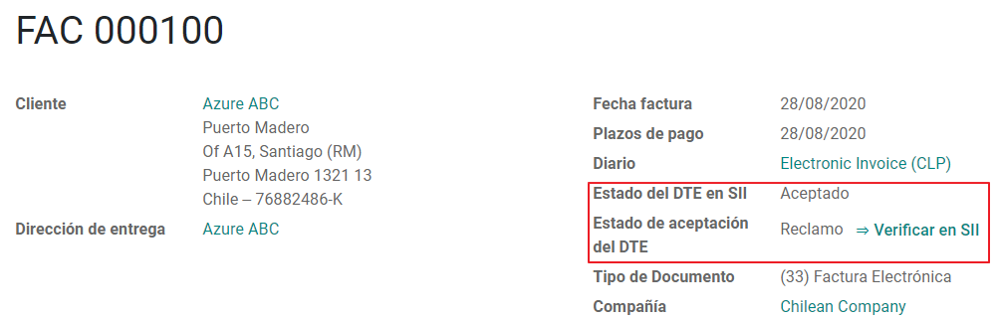Common Errors¶
There are multiple reasons behind a rejection from the SII, but these are some of the common errors you might have and which is the related solution.
Error:
RECHAZO- DTE Sin Comuna Origen.Hint: Make sure the Company Address is properly filled including the State and City.
Error en Monto:
- IVA debe declararse.Hint: The invoice lines should include one VAT tax, make sure you add one on each invoice line.
Error:
Rut No Autorizado a Firmar.Hint: The invoice lines should include one VAT tax, make sure you add one on each invoice line.
Error:
Fecha/Número Resolucion Invalido RECHAZO- CAF Vencido : (Firma_DTE[AAAA-MM-DD] - CAF[AAAA-MM-DD]) > 6 meses.Hint: Try to add a new CAF related to this document as the one you’re using is expired.
Error:
Element '{http://www.sii.cl/SiiDte%7DRutReceptor': This element is not expected. Expected is ( {http://www.sii.cl/SiiDte%7DRutEnvia ).Hint: Make sure the field Document Type and VAT are set either in the Customer and in the main company.
GLOSA:
Usuario sin permiso de envio.Hint: This error indicates that most likely, your company has not passed the Certification process in the SII - Sistema de Facturación de Mercado. If this is the case, please contact your Account Manager or Customer Support as this certification is not part of the the Odoo services, but we can give you some alternatives.
Credit Notes¶
When a cancellation or correction is needed over a validated invoice, a credit note must be generated. It is important to consider that a CAF file is required for the Credit Note, which is identified as document 64 in the SII.
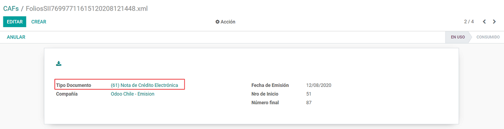ちなみに
Refer to the CAF section where we described the process to load the CAF on each document type.
Use Cases¶
Cancel Referenced document¶
In case you need to cancel or invalid an Invoice, use the button Add Credit note and select Full Refund, in this case the SII reference Code is automatically set to: Anula Documento de referencia.
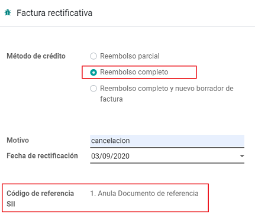Corrects Referenced Document Text¶
If a correction in the invoice information is required, for example the Street Name, use the button Add Credit note,select Partial Refund and select the option “Solo corregir Texto”. In this case the SII reference Code is automatically set to: Corrige el monto del Documento de Referencia.
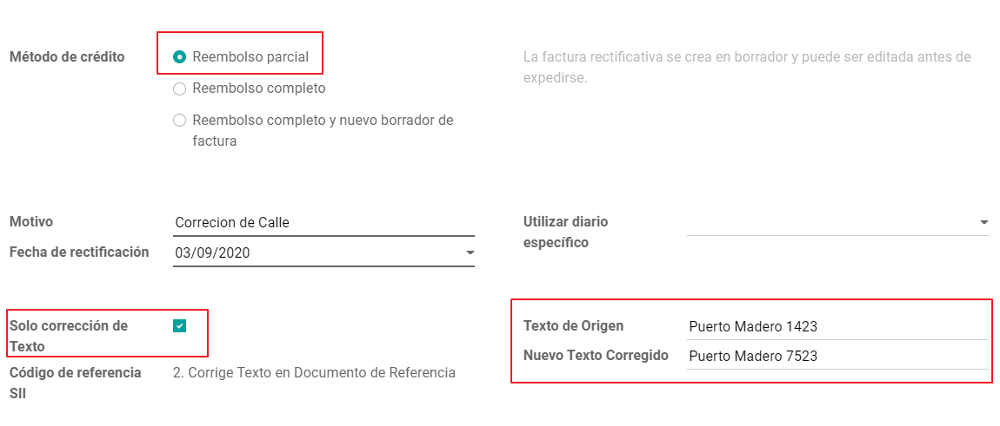Odoo creates a Credit Note with the corrected text in an invoice and price 0.
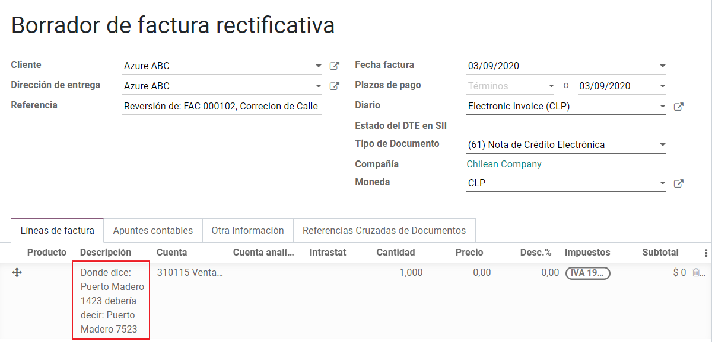重要
It’s important to define the default credit account in the Sales journal as it is taken for this use case in specific.
Corrects Referenced Document Amount¶
When a correction on the amounts is required, use the button Add Credit note and select Partial Refund. In this case the SII reference Code is automatically set to: Corrige el monto del Documento de Referencia.
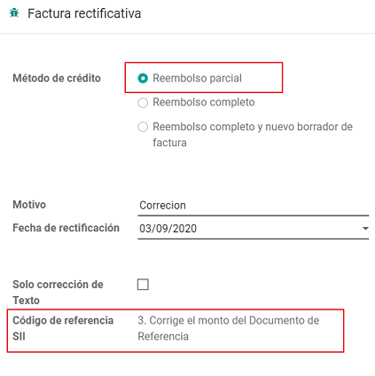Debit Notes¶
As part of the Chilean localization, besides creating credit notes from an existing document you can also create debit Notes. For this just use the button “Add Debit Note”. The two main use cases for debit notes are detailed below.
Use Cases¶
Add debt on Invoices¶
The most common use case for debit notes is to increase the value of an existing invoice, you need to select option 3 in the field Reference code SII:
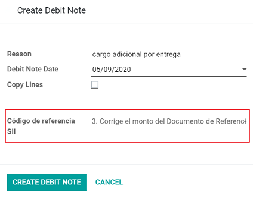In this case Odoo automatically includes the source invoice in the cross reference section:
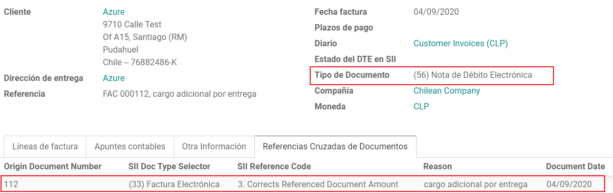Cancel Credit Notes¶
In Chile the debits notes are used to cancel a validated Credit Note, in this case just select the button Add debit note and select the first option in the wizard: 1: Anula Documentos de referencia.
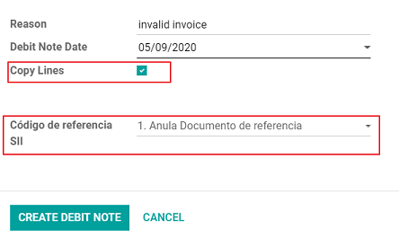Vendor Bills¶
As part of the Chilean localization, you can configure your Incoming email server as the same you have register in the SII in order to:
Automatically receive the vendor bills DTE and create the vendor bill based on this information.
Automatically Send the reception acknowledgement to your vendor.
Accept or Claim the document and send this status to your vendor.
Reception¶
As soon as the vendor email with the attached DTE is received: 1. The vendor Bill mapping all the information included in the xml. 2. An email is sent to the vendor with the Reception acknowledgement. 3. The DTE status is set as: Acuse de Recibido Enviado
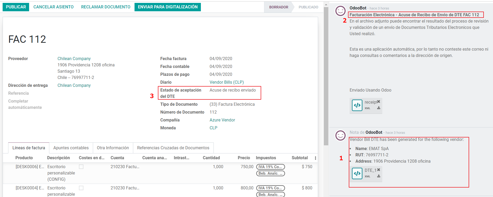Acceptation¶
If all the commercial information is correct on your vendor bill, you can accept the document using the button: Aceptar Documento, once this is done the DTE Acceptation Status changes to: Accepted and an email of acceptance is sent to the vendor.
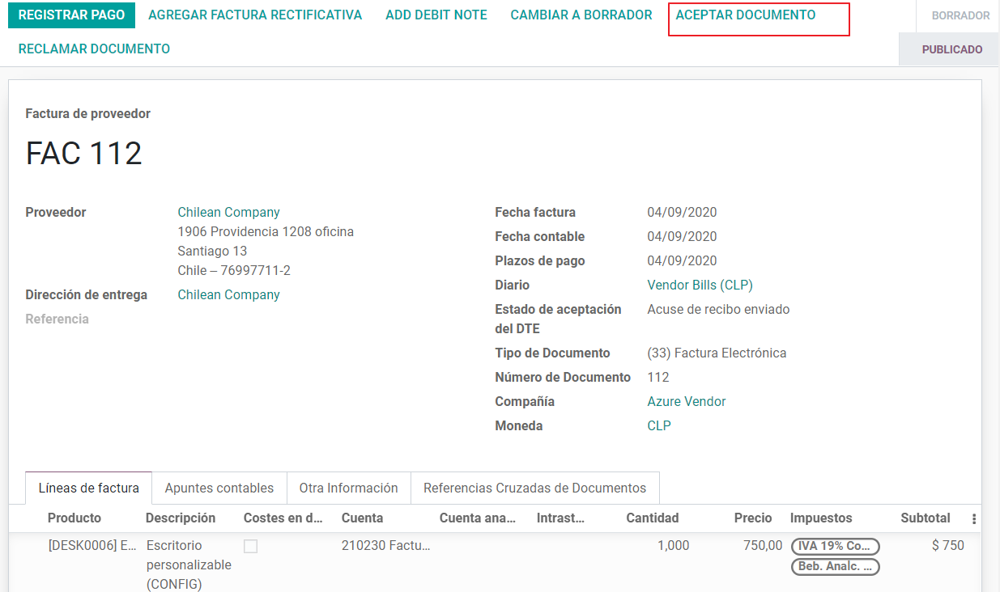Claim¶
In case there is a commercial issue or the information is not correct on your vendor bill, you can Claim the document before validating it, using the button: Claim, once this is done the DTE Acceptation Status change to: Claim and an email of acceptance is sent to the vendor.
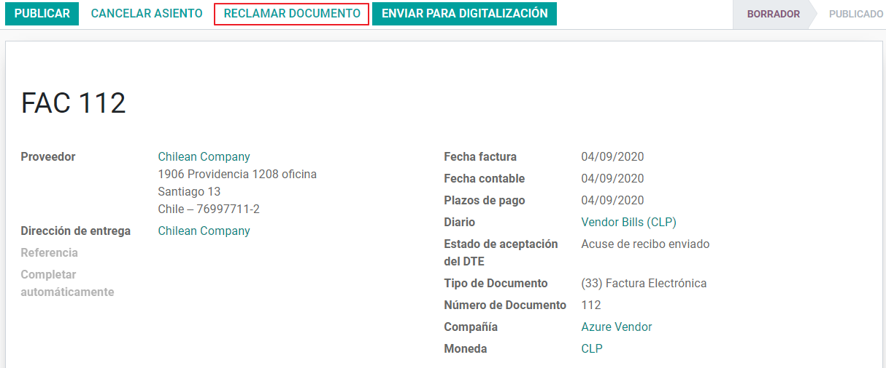If you claim a vendor bill, the status changes from draft to cancel automatically. Considering this as best practice, all the Claim documents should be canceled as they won’t be valid for your accounting records.
Financial Reports¶
Balance Tributario de 8 Columnas¶
This report presents the accounts in detail (with their respective balances), classifying them according to their origin and determining the level of profit or loss that the business had within the evaluated period of time, so that a real and complete knowledge of the status of a company.
You can find this report in
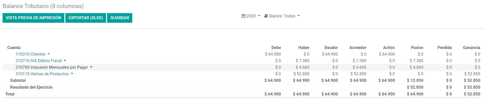Propuesta F29¶
The form F29 is a new system that the SII enabled to taxpayers, and that replaces the Purchase and Sales Books. This report is integrated by Purchase Register (CR) and the Sales Register (RV). Its purpose is to support the transactions related to VAT, improving its control and declaration.
This record is supplied by the electronic tax documents (DTE’s) that have been received by the SII.
You can find this report in
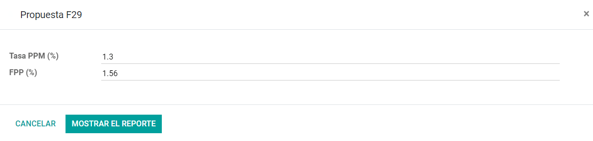